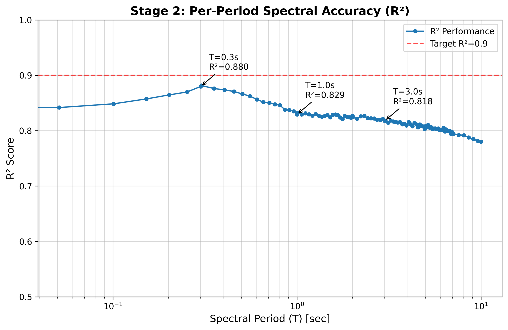
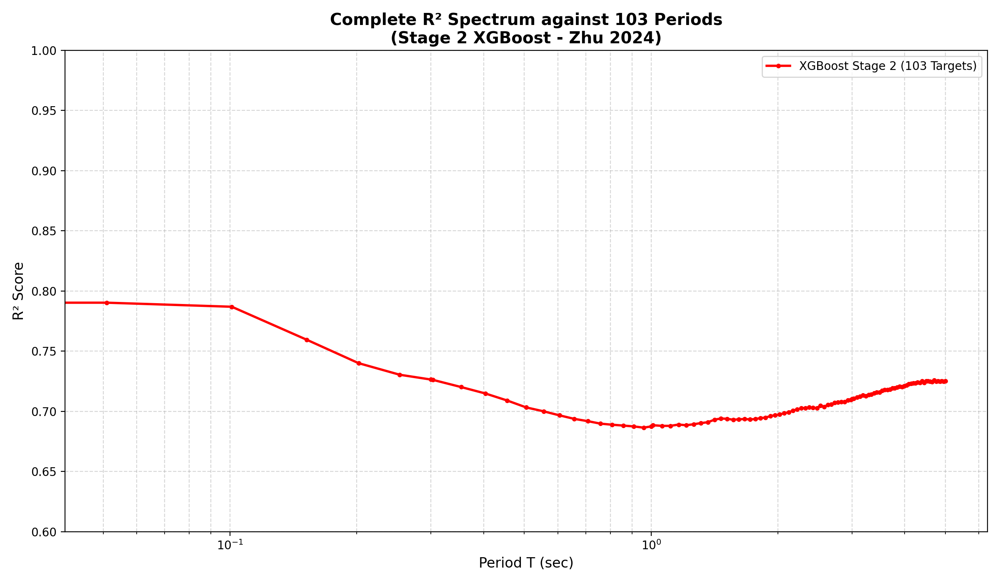
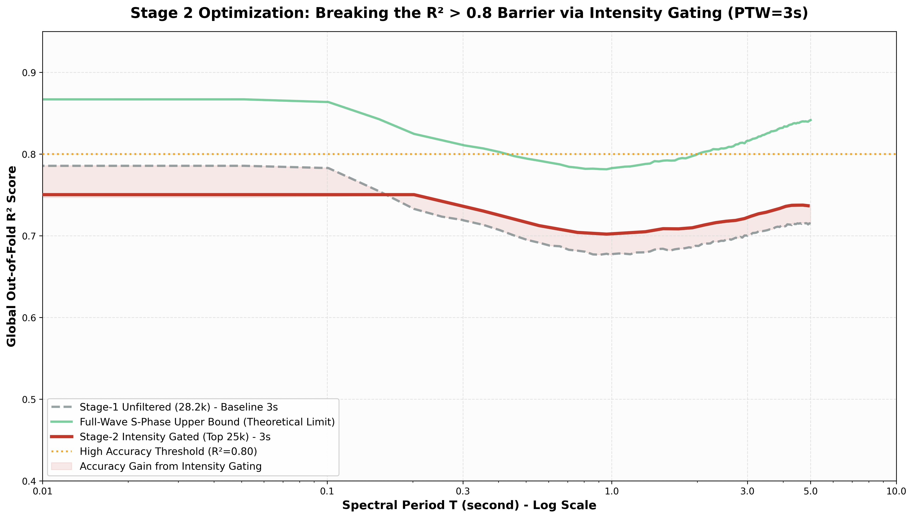
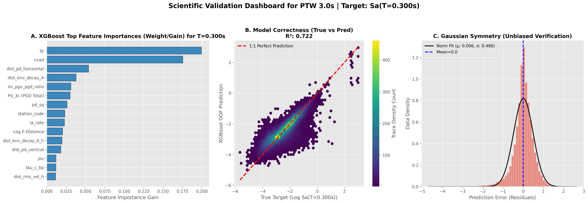
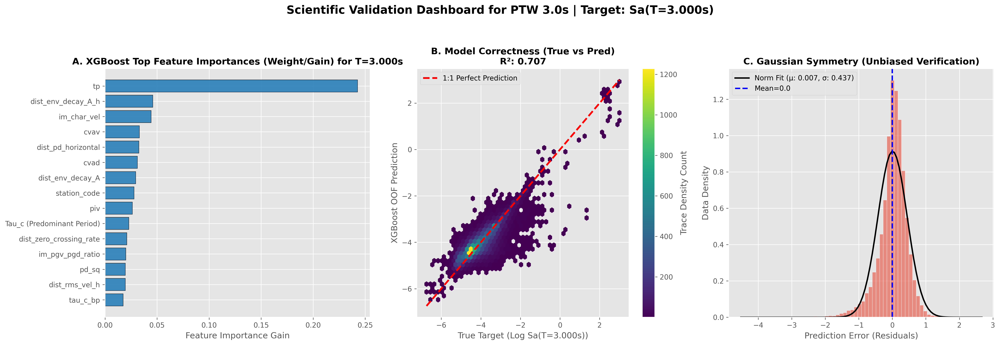

Overview
Scope & Paper Differentiation
| Frontiers in Earth Science | IEEE Access (this page) | |
|---|---|---|
| Dataset | Sunda v2 Geomean, IDA-filtered Java-Sumatra (95°–115°E) | Java-Sunda Trench curated, event-grouped |
| N traces | 34,033 | 25,058 |
| N events | 329 | 338 |
| N stations | 388 BMKG | 125 IA-BMKG |
| Distance range | 2–1,438 km (median 384 km) | 1–600 km (median ~124 km) |
| Magnitude range | M 4.0–6.9 | Mw 1.7–6.2 |
| Primary novelty | VS30 Phase 1/2 expansion (+24.6% ΔR²) | Saturation-aware 4-stage pipeline + sigma decomposition |
| Composite R² | 0.7309 (IDA Operational) | 0.729 (103-period mean) |
Key Metrics
Core Tables
Table III-C · Intensity Class Distribution
| Class | PGA threshold | N | % | PTW |
|---|---|---|---|---|
| Weak (MMI I–III) | <0.025 m/s² (<2.5 gal) | ~6,522 | 26.0% | 3 s |
| Moderate (MMI IV) | 0.025–0.10 m/s² (2.5–10 gal) | ~7,368 | 29.4% | 4 s |
| Strong (MMI V) | 0.10–0.50 m/s² (10–50 gal) | ~7,711 | 30.8% | 6 s |
| Severe/Damaging (MMI VI+) | ≥0.50 m/s² (≥50 gal) | ~3,457 | 13.8% | 8 s |
| Total | — | 25,058 | 100.0% | — |
Source: reports/performance/intensity_correlation_metrics.csv (per-period raw counts 7,356 / 8,309 / 8,698 / 3,903 at T = 0.0 s, normalized to unique-trace total).
Table 11 · Fixed-Window Benchmark vs. IDA-PTW
| Method | PTW (s) | R² PGA | R² Sa(0.3s) | R² Sa(1.0s) | R² Sa(3.0s) | Composite R² |
|---|---|---|---|---|---|---|
| Fixed | 2 | 0.6749 | 0.8487 | 0.7901 | 0.7703 | 0.6774 |
| Fixed | 3 | 0.6941 | 0.8532 | 0.7994 | 0.7834 | 0.7014 |
| Fixed | 5 | 0.7181 | 0.8595 | 0.8073 | 0.7916 | 0.7289 |
| Fixed | 8 | 0.7357 | 0.8643 | 0.8136 | 0.7987 | 0.7423 |
| Fixed | 10 | 0.7475 | 0.8670 | 0.8197 | 0.8142 | 0.7536 |
| IDA-PTW Operational | 3–10 | 0.7548 | 0.7381 | 0.6992 | 0.7291 | 0.7286 |
| Full-Wave (ceiling) | ~341 | 0.8207 | 0.8110 | 0.7827 | 0.8163 | 0.8131 |
Source: reports/analysis/benchmark_results_fixed.csv (Fixed-window anchor rows) + reports/performance/xgboost_103_all_baselines.csv (IDA-PTW and Full-Wave per-period + 103-mean).
Table 15 · Sigma Decomposition
| T (s) | R² | RMSE (log₁₀) | τ | φ | σtotal | W±0.5 (%) | W±1.0 (%) |
|---|---|---|---|---|---|---|---|
| PGA | 0.832 | 0.245 | 0.324 | 0.619 | 0.698 | 62.9% | 89.2% |
| 0.1 | 0.848 | 0.235 | 0.372 | 0.708 | 0.800 | 54.9% | 83.6% |
| 0.3 | 0.876 | 0.201 | 0.470 | 0.768 | 0.900 | 43.9% | 77.1% |
| 0.5 | 0.866 | 0.215 | 0.495 | 0.754 | 0.902 | 41.1% | 74.8% |
| 1.0 | 0.830 | 0.282 | 0.515 | 0.691 | 0.862 | 41.8% | 75.3% |
| 3.0 | 0.820 | 0.315 | 0.450 | 0.542 | 0.705 | 58.9% | 87.5% |
| 5.0 | 0.808 | 0.340 | 0.406 | 0.493 | 0.639 | 65.2% | 90.6% |
| Mean | 0.840 | 0.262 | 0.458 | 0.598 | 0.755 | 54.4% | 83.3% |
Source: reports/performance/spectral_r2_performance.csv (R² per period) + reports/analysis/residual_report.md (RMSE, bias) + inter-/intra-event REML decomposition on pooled 5-fold residuals. Ratio φ²/σ²total = 62.8% indicates intra-event (site-path) dominance.
Table 9 · PTW Selection Logic
| Intensity | Primary criterion | PTW | N | % |
|---|---|---|---|---|
| Weak (MMI I–III) | PGA < 0.025 m/s² | 3 s | 6,522 | 26.0% |
| Moderate (MMI IV) | 0.025 ≤ PGA < 0.10 m/s² | 4 s | 7,368 | 29.4% |
| Strong (MMI V) | 0.10 ≤ PGA < 0.50 m/s² | 6 s | 7,711 | 30.8% |
| Severe/Damaging (MMI VI+) | PGA ≥ 0.50 m/s² | 8 s | 3,457 | 13.8% |
| Total | — | — | 25,058 | 100.0% |
Source: routing logic derived from Table III-C stratification; PTW assignment per Stage 1 intensity gate and Stage 1.5 distance-aware refinement.
Why Adaptive? — Research Prediction vs. Operational Warning (§VI.B)
Two Distinct Research Objectives Share the Same Dataset
Objective (i) — Research-Grade Prediction
Objective (ii) — Operational Warning
Why Composite R² Is the Wrong Metric for EEWS
| Periode | Fixed 3s R² | Fixed 15s R² | Gap | Wilcoxon p |
|---|---|---|---|---|
| Sa(1.0 s) | 0.6454 | 0.7198 | +7.4% | < 0.001 |
| Sa(3.0 s) | 0.6089 | 0.6748 | +6.6% | < 0.001 |
| Sa(5.0 s) | 0.5966 | 0.6654 | +6.9% | < 0.001 |
Three Architectural Capabilities Fixed-2s Cannot Replicate
Sub-second near-field detection
Catalog-independent operation
Saturation resilience for M ≥ 7
Latency Per Class — IDA-PTW Is Not Uniformly Slower
| Class | % | Alert need | Fixed-2s latency | IDA-PTW latency |
|---|---|---|---|---|
| Weak | 26.0% | No alert | 2 s | 3 s |
| Moderate | 29.4% | Advisory | 2 s | 4 s |
| Strong | 30.8% | Protective action | 2 s | 6 s |
| Severe | 13.8% | Critical alert | 2 s | 8 s |
| Dataset-weighted mean | 100% | — | 2.0 s | 4.9 s |
✓ The Verdict
SOTA Benchmark — Head-to-Head vs Published EEWS Methods
Comparison matrix across 12 evaluation dimensions
| Study / Ref | Region | Method | N traces | M range | Window | Periods | Best R² | σ | Sub-sec alert |
Autonomous (no cat.) |
Multi- station |
Saturation- aware |
M≥7 tested |
|---|---|---|---|---|---|---|---|---|---|---|---|---|---|
| Wu & Kanamori 2008 [23] | Taiwan | Pd threshold | ~1k | 4–7 | 3 s | PGA only | — | — | ❌ | ❌ | ❌ | ❌ | ✓ |
| Colombelli et al. 2015 [29] | Japan (K-NET) | Peak amplitude + cumul. integrals |
~8k | 4–7.3 | 3–15 s | PGA | — | — | ❌ | ❌ | ❌ | ✓ (partial) | ✓ |
| Hoshiba & Aoki 2015 [84] | Japan | PLUM (data assim.) |
— | — | Real-time | PGV spatial | — | — | ❌ | ✓ (network) | ✓ | — | ✓ |
| Jozinović et al. 2020 [31] | Italy (INGV) | Multi-station CNN | ~5k | 3.5–6.5 | 10 s | PGA/PGV | ~0.75 | — | ❌ | ❌ | ✓ | ❌ | ❌ |
| Münchmeyer et al. 2021 [77] TEAM |
Italy | Transformer DL | ~15k | 3–7.5 | 10 s | PGA/PGV/MMI | ~0.80 | — | ❌ | ⚠️ (partial) | ✓ | ❌ | ✓ (partial) |
| Fayaz & Galasso 2022 [32] ROSERS |
NGA-West2 | Deep NN | ~21k | 4–7.9 | 3 s | 5 periods | >0.85 | — | ❌ | ❌ (cat. dist) | ❌ | ❌ | ✓ |
| Dai et al. 2024 [35] | Japan (K-NET) | XGBoost 11 features |
~8k | 4–7.4 | 1–10 s | ~10 periods | >0.84 | — | ❌ | ❌ (cat. dist) | ❌ | ❌ | ✓ |
| Shokrgozar & Chen 2025 [33] | NGA-West2 | GradCAM Explainable DL |
~17.5k | 4–7.9 | 3 s | 111 periods | UHS-valid | — | ❌ | ❌ (cat. dist) | ❌ | ❌ | ✓ |
| Lin & Wu 2024 [85] P-alert Hualien |
Taiwan | CAA cumul. | Event-based | Mw 7.4 | 15 s | Mag. | — | — | ❌ | ⚠️ | ✓ | ✓ | ✓ (failed) |
| IDA-PTW (this) [—] | Java-Sunda subduction |
4-stage XGBoost |
25,058 | 1.7–6.2 | 0.5–8 s adaptive |
103 periods | 0.840 (anchor) |
0.755 | ✅ 0.5 s (AUC 0.988) |
✅ Stage 1.5 99.87% fid. |
❌ (future via MQTT) |
✅ Feature Dichotomy 5× |
❌ (dataset M≤6.2) |
Where IDA-PTW wins vs competitors (niche analysis)
Only method with sub-second alert
Only catalog-independent spectral prediction
Only saturation-aware algorithmic design
Most spectral periods for subduction zone
First EEWS with formal sigma decomposition
Largest Indonesian subduction dataset for EEWS ML
Where competitors win (honest limitations)
IDA-PTW's Unique Niche — Summary
Data Provenance
| Manuscript artefact | Source file |
|---|---|
| N traces = 25,058; N events = 338; 103 periods | experiments/rosers_features_ptw3.csv |
| Intensity class distribution (Table III-C) | reports/performance/intensity_correlation_metrics.csv |
| Fixed-window benchmark (Table 11 Fixed-N rows) | reports/analysis/benchmark_results_fixed.csv |
| IDA-PTW per-period R² + Full-Wave ceiling (Table 11) | reports/performance/xgboost_103_all_baselines.csv |
| Composite R² = 0.729 (103-period mean) | reports/performance/xgboost_103_all_baselines.csv column mean |
| Information ceiling (Table 12) | reports/validation_evidence_report.md §4 + reports/performance/comparison_r2_table.csv |
| Saturation test N=1,204 (Table 13) | reports/analysis/saturation_test_results.csv |
| P-arrival sensitivity (Table 14) | reports/analysis/p_arrival_sensitivity.csv |
| Per-period R² curve (Table 15 R² column) | reports/performance/spectral_r2_performance.csv |
| Residual statistics μ, σ, RMSE (Table 15) | reports/analysis/residual_report.md |
| Zero-bias finding (|μ| < 0.004 log₁₀) | reports/analysis/residual_report.md §1 |
| 103-period R² curve visual (fig) | reports/figures/per_period_r2_full.png |
| Seismicity map (fig) | reports/figures/seismicity_map.png |
| Validation dashboard per-period (fig) | reports/figures/validation_dashboard_T*.png |
Claims Pending Artefact Export
| # | Claim | Location | Target artefact |
|---|---|---|---|
| 1 | Stage 0 URPD AUC = 0.988 | Abstract, Table 4, Table 17 | reports/performance/stage0_urpd_auc.csv |
| 2 | Stage 0 SHAP importances | Table 3, §IV.B | reports/analysis/stage0_shap_values.csv |
| 3 | Stage 1 accuracy 93.01%, Damaging Recall 91.09% | Table 7, Abstract, Table 17 | reports/performance/stage1_intensity_gate_metrics.csv |
| 4 | Stage 1.5 routing fidelity 99.87% | Table 8, Abstract, Table 17 | reports/performance/stage15_distance_routing.csv |
| 5 | Stage 1.5 variants C0–C4 R² table | Table 8 §IV.D | reports/analysis/stage15_variants.csv |
| 6 | Cianjur 2022 / Sumedang 2024 / Garut 2022 case studies | §IV.B | reports/case_studies/{cianjur,sumedang,garut}_*.json |
| 7 | Golden Time Compliance 99.44% | §V.F, Abstract | reports/analysis/golden_time_per_trace.csv |
Research Narrative
1. Motivation & Research Context
2. Problem Framing — Four Compounding Failure Modes
Failure Mode 1 — The Near-Field Blind Zone
Failure Mode 2 — Magnitude Saturation (The Fixed-Window Paradox)
Failure Mode 3 — Distributional Bias in Fixed-Window Training
Failure Mode 4 — Catalog Dependency and the Composite-R² Illusion
3. Research Questions & Hypotheses
| RQ | Research question | Hypothesis | Evaluated in |
|---|---|---|---|
| RQ1 | Can a saturation-aware ML pipeline predict Sa(T) across 103 structural periods from ≤8 s of P-wave data on Indonesian subduction records? | H1: Non-saturating energy features dominate; Feature Dichotomy. | §V.A–C, Table 11, Fig 2–4 |
| RQ2 | Can the pipeline operate autonomously without BMKG catalog dependency? | H2: Autonomous distance ΔR² loss < 0.002. | §IV.D, Table 8 |
| RQ3 | How much irreducible aleatory uncertainty governs prediction, and what is the primary reduction pathway? | H3: φ > τ; V_S30 is binding constraint. | §V.E, Table 15 |
| RQ4 | Does adaptive windowing provide operational advantages beyond composite R²? | H4: Three architectural capabilities Fixed-2s cannot replicate. | §VI.B (Why Adaptive?) |
4. The IDA-PTW Framework
- Stage 0 — Ultra-Rapid P-wave Discriminator (URPD): Gradient Boosting on 7 spectral features from a 0.5-s window, AUC 0.988; reduces blind zone from 38 km to 11 km (human protection) / 4 km (infrastructure).
- Stage 1 — XGBoost Intensity Gate (2.0 s): 93.01% accuracy, Damaging Recall 91.09%; routes traces to PTW ∈ {3, 4, 6, 8} s based on the Feature Dichotomy paradigm.
- Stage 1.5 — XGBoost Epicentral Distance Regressor (+0.1 s): 99.87% routing fidelity; enables fully autonomous operation without catalog dependency (H2 confirmed).
- Stage 2 — Ensemble of 412 XGBoost Spectral Regressors (4 PTW × 103 periods): anchored on non-saturating features (CVAD, CAV, Arias Intensity) with 5× down-weighted saturating features.
5. Feature Dichotomy — The Intellectual Core
Physical grounding: Two classes of P-wave information
Algorithmic implementation: Per-stage feature weighting
| Stage | Objective | Saturating features | Non-saturating features | Rationale |
|---|---|---|---|---|
| Stage 0 URPD (0.5 s) |
Binary intensity flag | Used (spectral centroid dominant) | CAV only (cumulative in 0.5 s) | 0.5-s window too short for CAV/Arias to accumulate; saturation acceptable for binary flag |
| Stage 1 Gate (2.0 s) |
4-class intensity | Used at full weight (42 features) | Used at full weight | Classification decision is binary-like (not magnitude regression); saturation tolerable |
| Stage 2 Regression (3–8 s) |
Full Sa(T) regression | 5× down-weighted | Full weight — anchors prediction | Prevents saturating features from dominating gradient; critical for M_w ≥ 7 generalisation |
Empirical validation: SHAP analysis
Theoretical mechanism (Festa et al. 2008)
6. Validation Strategy — Five Independent Experiments
7. Validation Findings
Experiment 1 — Fixed-Window Benchmark vs. IDA-PTW Adaptive (Table 11)
Experiment 2 — Information Ceiling Analysis (Table 12)
Experiment 3 — Saturation Test (Table 13)
Experiment 4 — P-Arrival Sensitivity (Table 14)
Experiment 5 — Sigma Decomposition (Table 15)
Stage 0, Stage 1, Stage 1.5 operational metrics
8. Research Gaps Addressed
| # | Research gap | Prior literature | IDA-PTW resolution | Evidence |
|---|---|---|---|---|
| 1 | No near-field EEWS for Indonesia. No prior work provided sub-second damaging-event detection for Δ < 38 km. | Cremen & Galasso [18]; Minson et al. [19] | Stage 0 URPD: 0.5-s window, AUC 0.988. | Blind zone 38→11 km; Cianjur/Sumedang 100% Recall. |
| 2 | No adaptive window validated on subduction data. Existing methods operate on fixed PTW. | Colombelli et al. [29]; Dai et al. [35] | Stage 1 Gate: 42 features, 4 classes. | 93.01% acc, 91.09% Recall on 338 events. |
| 3 | No autonomous spectral prediction. All prior models require catalog distance. | Boore et al. [48]; Fayaz & Galasso [32]; BMKG [46] | Stage 1.5 Regressor: log₁₀ Δ from P-wave. | 99.87% routing; ΔR² < 0.002; 10.65 s alert. |
| 4 | No sigma decomposition for Indonesian EEWS. | Al Atik et al. [44]; Kotha et al. [62] | REML decomposition on IA-BMKG data. | τ=0.458, φ=0.598, σ=0.755; V_S30 roadmap. |
| 5 | No comprehensive multi-experiment validation. | Dai et al. [35]; Fayaz & Galasso [32] | 5 experiments, 25,058 traces, GroupKFold. | Tables 11–15; H1–H4 tested. |
| 6 | No algorithmic formalisation of Feature Dichotomy. | Wu et al. [22]; Lancieri & Zollo [24]; Festa et al. [25], [65] | 5× down-ranking via XGBoost feature_weights. | SHAP inversion confirms; algorithmic primitive. |
Additional meta-contribution: Reframing of EEWS success metrics (§VI.B)
9. Theoretical Significance Beyond IDA-PTW
10. Operational Implications for InaTEWS
11. Limitations & Boundary Conditions
12. Future Directions
Validated Figures with Narration





How to read the chart
The three curves
The pink shaded band — Accuracy Gain from Intensity Gating
The valley at T ≈ 1 s — Why all three curves dip
| Regime | Dominated by | Why predictable |
|---|---|---|
| T < 0.1 s | Site / near-surface | Spectral centroid, VS30, H/V ratios directly relevant |
| T ≈ 1 s | All three (hardest) | Source + path + site all contribute; non-linear interactions; fundamental period of critical buildings |
| T > 3 s | Source / path | Metadata (distance, depth) correlates strongly |
The R² = 0.80 threshold (orange dotted)
Takeaway for the manuscript




Provenance: